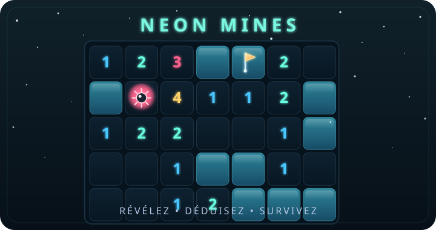
Black Holes
Explorez les secteurs spatiaux et repérez les trous noirs grâce aux satellites.
Jouer →QUINZE JEUX — ZÉRO INSTALLATION
Quinze expériences faites pour jouer tout de suite. Choisissez votre arène et lancez une partie.
Découvrir les jeuxCHOISISSEZ VOTRE PARTIE
15 JEUX DISPONIBLES

Explorez les secteurs spatiaux et repérez les trous noirs grâce aux satellites.
Jouer →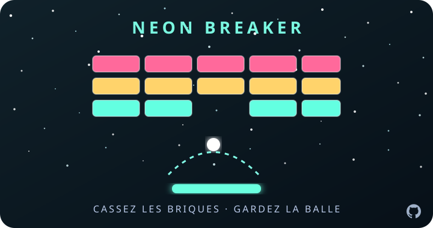
Cassez les briques et gardez la balle en jeu.
Jouer →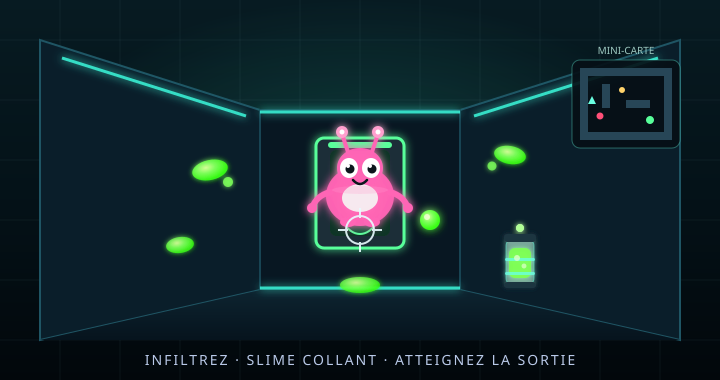
Infiltrez le secteur en vue subjective et éliminez les aliens.
Jouer →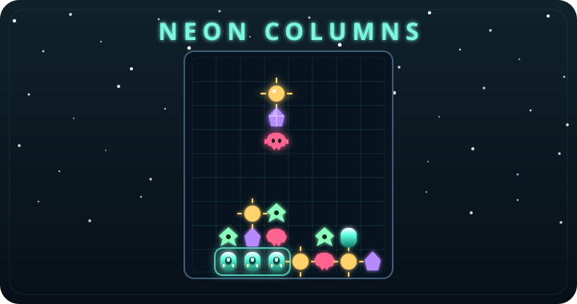
Alignez des symboles pour déclencher des réactions en chaîne.
Jouer →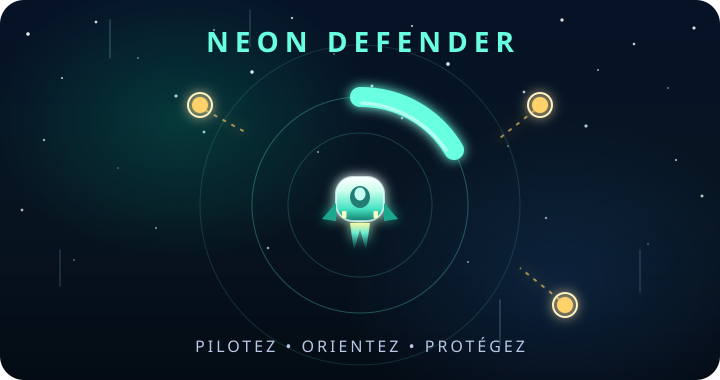
Orientez le bouclier pour intercepter les photons.
Jouer →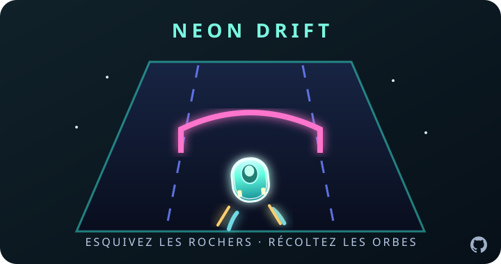
Pilotez votre voiture sur le circuit, évitez les obstacles et récoltez les orbes.
Jouer →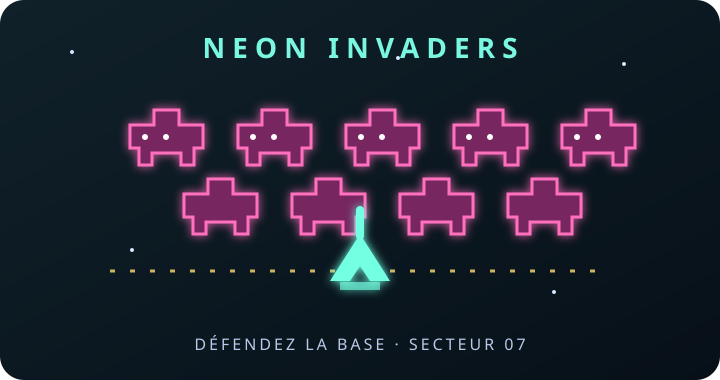
Défendez votre base contre des vagues d'envahisseurs.
Jouer →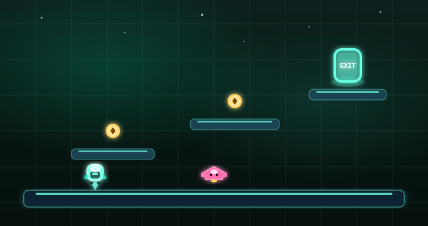
Sautez de plateforme en plateforme, collectez les noyaux et atteignez le portail.
Jouer →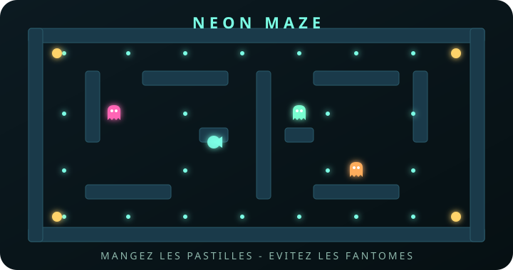
Mangez les pastilles, échappez aux fantômes, passez au niveau suivant.
Jouer →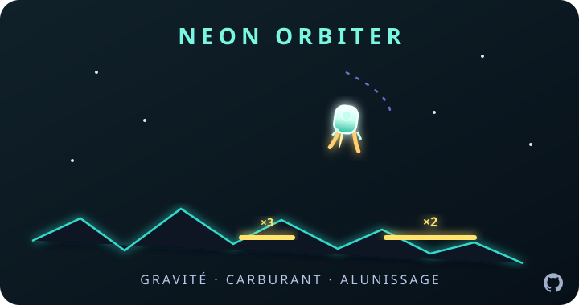
Alunissez en douceur : gravité, carburant et plateformes bonus.
Jouer →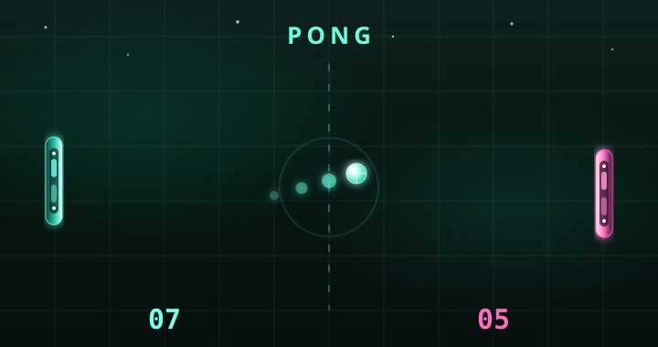
Renvoyez la balle, marquez des points, premier à 11.
Jouer →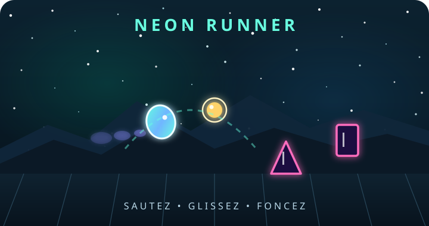
Sautez et glissez pour éviter les obstacles et tenir la distance.
Jouer →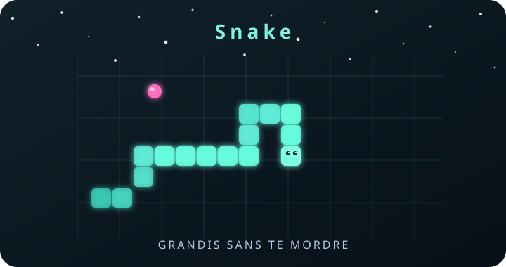
Grandissez sans vous mordre, la vitesse s'emballe.
Jouer →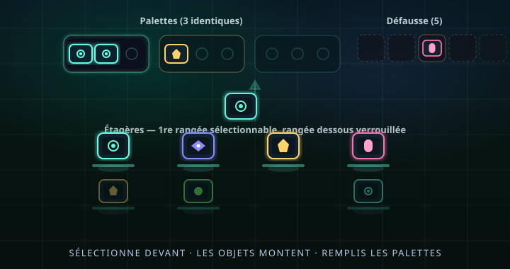
Triez les symboles identiques et expédiez les palettes avant saturation.
Jouer →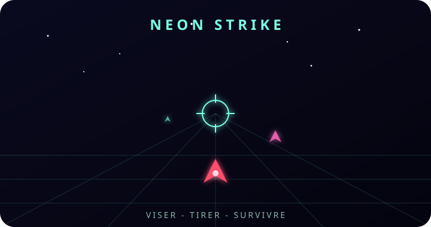
Abattez les vaisseaux avant qu'ils ne vous atteignent.
Jouer →